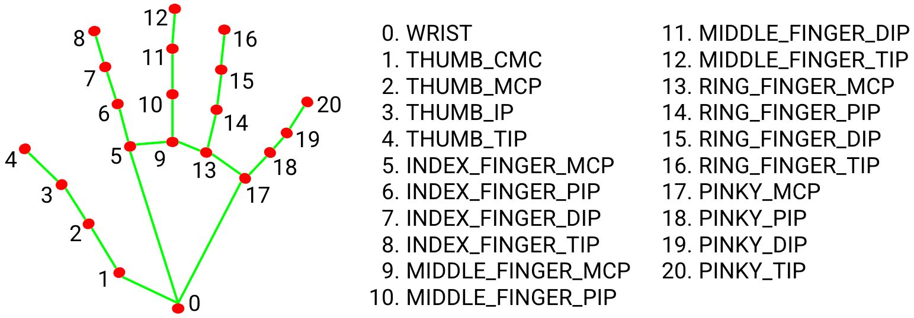
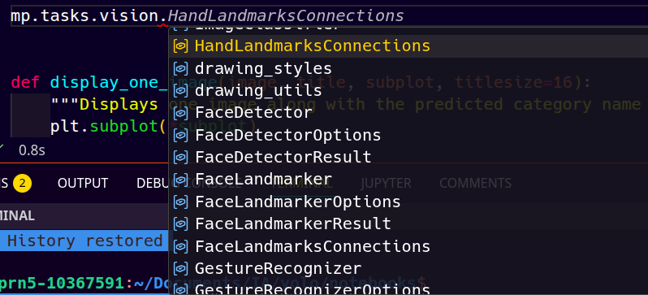

Postura (Pose Estimation)
Yolo conté models entrenats per a la detecció de postures, que poden identificar i localitzar les parts del cos humà en imatges o vídeos.
Aquests models són útils per a aplicacions com el seguiment de moviments, l'anàlisi esportiva, la realitat augmentada i la interacció humà-computadora.
- Seguiment de moviments: Permet analitzar els moviments corporals en temps real, útil per a entrenaments esportius o fisioteràpia.
- Anàlisi esportiva: Ajuda a millorar el rendiment dels atletes mitjançant l'anàlisi detallada dels seus moviments.
- Realitat augmentada: Permet crear experiències immersives on els usuaris poden interactuar amb elements virtuals mitjançant els seus moviments.
- Interacció humà-computadora: Facilita la creació d'interfícies que responen als gestos i moviments dels usuaris.
Detecció de postura
Els models preentrenats de YOLO venen preparats per a detectar fins 17 punts del cos humá
| Index | Part | Regió del cos |
|---|---|---|
| 1 | Nose,Nas | Cara |
| 2 | Left Eye,Ull esquerre | Cara |
| 3 | Right Eye,Ull dret | Cara |
| 4 | Left Ear,Orella esquerra | Cara |
| 5 | Right Ear,Orella dreta | Cara |
| 6 | Left Shoulder,Muscle esquerra | Tronc superior |
| 7 | Right Shoulder,Muscle dreta | Tronc superior |
| 8 | Left Elbow,Colze esquerre | Braç |
| 9 | Right Elbow,Colze dret | Braç |
| 10 | Left Wrist,Poignet / Munyeca esquerra | Braç |
| 11 | Right Wrist,Poignet / Munyeca dreta | Braç |
| 12 | Left Hip,Cuixa esquerre | Tronc inferior |
| 13 | Right Hip,Cuixa dreta | Tronc inferior |
| 14 | Left Knee,Genoll esquerre | Cama |
| 15 | Right Knee,Genoll dret | Cama |
| 16 | Left Ankle,Turmell esquerre | Cama |
| 17 | Right Ankle,Turmell dret | Cama |
A continuació, es mostra un exemple de com utilitzar un model de detecció de postura per a obtenir les coordenades dels punts clau en una imatge: Anglès (Original),Català
| Python | |
|---|---|
Aquest codi carregarà el model de detecció de postura, realitzarà la detecció en una imatge i imprimirà les coordenades dels punts clau identificats.
Resultats
Un cop fet l'anàlisi, la variable results contindrà una llista per a cada persona en la imatge. Això dincs si hi han 3 persones tindrem results[0], results[1] i results[2].
Par a cada element de la llista contindrà les coordenades dels punts clau per a cada persona detectada. Ho tenim a results[0].keypoints. Ara be el resultat és un tensor o matriu, per la qual cosa anem a simplificar recuperant-ho com un array de numpy.
Donat que les dades poden haverse processat en CPU o en GPU, pot canviar una mica. Si hem processat amb una CPU, el resultat serà un array de numpy. Si hem processat amb una GPU, el resultat serà un tensor de PyTorch. Per a convertir el tensor a un array de numpy, podem utilitzar el mètode .cpu().numpy().
Així doncs:
```python # recuperem les coordenades de la primera o única persona detectada keypoints = results[0].keypoints
for person_kpts in keypoints: # Pasamos a CPU y numpy para iterar fácilmente
| Text Only | |
|---|---|
1 2 3 4 5 | |
``
En aquest codi,pointscontindrà les coordenades (x, y) de cada punt clau per a la persona detectada, mentre queconfidences` contindrà les confidences associades a cada punt clau. Això ens permetrà analitzar la postura de la persona en la imatge.
Ara ja depenent del nostre projecte ja podem utilitzar aquestes coordenades per a diferents aplicacions.
Les mans
Una part molt important en la detecció de postures és la detecció de les mans, ja que aquestes poden tenir una gran varietat de posicions i gestos. YOLO pot ajudar a crear models a partir de datasets amb mans etiquetades. El primer pas per entrenar un model personalitzat és recopilar dades i anotar-les o trobar un conjunt de dades existent que s'ajusti a les necessitats del projecte. Per exemple, el conjunt de dades Hand Keypoints és un bon punt de partida per entrenar models de Visió per Computadora per al seguiment de mans i l'estimació de la postura. Amb 26.768 imatges anotades, elimina la necessitat d'etiquetatge manual.  Es pot utilitzar per entrenar models com Ultralytics YOLO11 per aprendre ràpidament a detectar i rastrejar els moviments de la mà. El conjunt de dades inclou 21 punts clau per ma, que abasten la munyeca, els dits i les articulacions. A més, les anotacions del conjunt de dades es van generar amb Google MediaPipe, una eina per desenvolupar solucions basades en IA per al processament de continguts en temps real, la qual cosa garanteix una detecció precisa i fiable dels punts clau.
Mediapipe
Per simplificar-ho encara més, es pot utilitzar la biblioteca de Google MediaPipe, que ofereix solucions preentrenades per a la detecció de mans i postures. MediaPipe proporciona una API fàcil d'utilitzar que permet detectar i rastrejar les mans en temps real, facilitant la implementació de projectes que requereixen aquesta funcionalitat sense necessitat d'entrenar un model des de zero. De fet el dataset que recomanem per a entrenar models de detecció de mans, el Hand Keypoints, es va generar amb MediaPipe, la qual cosa assegura que les anotacions siguin precises i fiables. Això permet als desenvolupadors utilitzar aquest conjunt de dades per entrenar els seus propis models de detecció de mans o utilitzar les solucions preentrenades de MediaPipe per a projectes que requereixen aquesta funcionalitat.
Detectió de mans amb MediaPipe
Primerament, cal instal·lar la biblioteca MediaPipe i importar-la al nostre projecte:
bash
pip install mediapipe
| Python | |
|---|---|
A conntinuació hem de preparar el nostre model per a la detexxió. Des de la documentació de MediaPipe, podem utilitzar el model de detecció de mans preentrenat que ofereix la biblioteca.
| Python | |
|---|---|
Aques comandament carrega les eines de visio de mediapipe per a la detecció de mans. Com podeu veure mediapipe oferei moltes més eines, algunes de visio, altres de processament de senyals, etc.

Juntament, tambe carreguem eines de dibuix per a visualitzar els resultats de la detecció de mans i postures:
| Python | |
|---|---|
A continuació, podem utilitzar el model de detecció de mans per a processar les imatges i obtenir les coordenades dels punts clau de les mans. Aquest model necessitem descarregar-lo abans d'utilitzar-lo:
| Bash | |
|---|---|
El deixarem guardat en la carpeta del nostre projecte i el carregarem al nostre codi:
Pots consultar les opcions completes en la documentació oficial de MediaPipe: GestureRecognizerOptions
Amb el model carregat, mitjançant l'objecte que hem declarat recognizer, podem processar les imatges i obtenir les coordenades dels punts clau de les mans
| Python | |
|---|---|
Anme a estudiar que ens ofereix el resultat de la detecció i en quins formats ens retorna les coordenades dels punts clau de les mans.
L'objecte recognition_result és una instància de GestureRecognitonResult i conté diverses llistes, depenent del número de mans que hi han:
gestures -> Un colecció dels gestos reconeguts.
Category(index=-1, score=0.9083037972450256, display_name=None, category_name='Victory')
handedness -> Classificació de la ma (dreta o esquerre)
hand_landmarks -> Les coordenades normalitzades de la ma detectada. Ès un array de 21 punts (NormalizedLandMarks) respecte de la imatge. Ens servirà per a projectes que només necessiten la posició de la mà en la imatge, com ara el reconeixement de gestos o la interacció amb elements visuals.
Cada Landmark conté les coordenades x, y i z de cada punt clau de la mà, on x i y són les coordenades normalitzades respecte a l'amplada i alçada de la imatge (valors entre 0 i 1), i z representa la profunditat relativa del punt clau respecte a la posició de la mà.
hand_world_landmarks -> Les coordinades "reals" de la ma detectada, que tenen en compte la profunditat i la posició en l'espai tridimensional. L'oritge és el centre de la munyeca, que és el (0,0,0). Aquestes coordenades són útils per a aplicacions que requereixen una comprensió més profunda de la posició de la mà en l'espai, com ara la realitat augmentada o la interacció humà-computadora. També és un array de 21 punts (LandMarks) que conté les coordenades x, y i z de cada punt clau de la mà en l'espai tridimensional.
Pensa que per a cada ma detectada, tindrem un element a cada una d'aquestes llistes. Per exemple, si tenim dues mans detectades, contindrà dues entrades, una per a cada mà.
Per a completar el dibuix, mediapipe incorpora una utilitat que ens permet dibuixar els punts clau i les connexions entre ells a la imatge. Aquesta utilitat és molt útil per a visualitzar els resultats de la detecció de mans i postures.
| Python | |
|---|---|
Aquesta funció dibuixa els landmarks i les connexions entre ells a la imatge RGB. El primer argument és la imatge on es vol dibuixar, el segon argument són les coordenades dels punts clau de la mà, el tercer argument són les connexions entre els punts clau (definides per mp_hands.HAND_CONNECTIONS), i els últims dos arguments són els estils de dibuix per als punts clau i les connexions, respectivament.